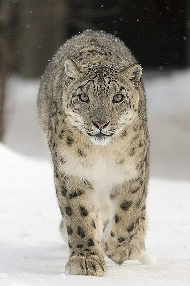
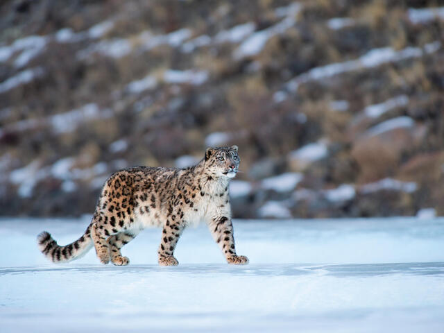
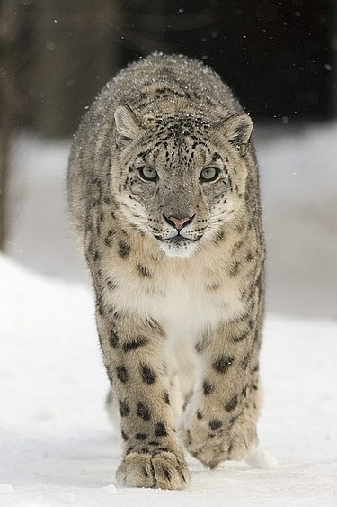
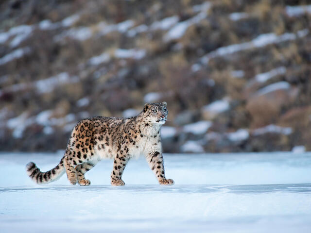
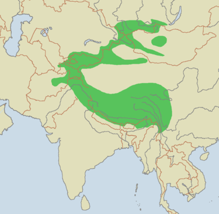

Descripcion
El leopardo de las nieves o irbis (Panthera uncia) es una especie de mamífero carnívoro de la familia Felidae propia de las montañas de Asia Central. Viven en montañas remotas a altitudes de hasta 6000 m s. n. m., motivo por el cual es poco lo que se sabe de ellos. Su pelo es gris, suave y excepcionalmente denso, y tiene una cola también de longitud excepcional que enrolla alrededor del cuerpo para abrigarse. Caza de día y ataca a todo tipo de animales salvajes, así como al ganado. Son a veces matados por granjeros, pero también cazados por su piel.[cita requerida] Se desconoce la cantidad de ejemplares que quedan en estado salvaje, aunque el Fondo Mundial para la Naturaleza estima que habrá apenas cuatro mil ejemplares. El período de gestación es de aproximadamente cien días, teniendo normalmente dos cachorros, aunque puede tener un máximo de cinco crías. Se consideran adultos a los dos años
Clasificacion
Inicialmente fue clasificado dentro del género Felis, y durante bastante tiempo se utilizó esa nomenclatura (Felis uncia). Posteriormente, autores como Pocock lo situaron en su propio género, como Uncia uncia.7 Sin embargo, los análisis genéticos han motivado la inclusión del leopardo de las nieves en el género Panthera, al poner de manifiesto su estrecha relación con las otras cuatro especies del mismo (Panthera leo, P. tigris, P. pardus y P. onca), fijándose la nueva combinación Panthera uncia.89 Las comparaciones del ADN mitocondrial sugieren además una relación de parentesco más próxima con el león (Panthera leo) que con el resto de especies del género.10 Sunquist y Sunquist, en la obra Handbook of the Mammals of the World de 2009, apuntan a que sea una de las dos especies más tempranas en divergir del ancestro común del género Panthera.11 Han sido propuestas varias subespecies para las poblaciones de diferentes regiones geográficas; sin embargo, con la posible excepción de U. u. baikalensis-romanii, que requiere una mayor evaluación, estas subespecies no se consideran válidas.7
Estado de Conservacion

distribucion geografica 
Sub-especies
- Panthera uncia irbis
- Panthera uncia uncia
- Panthera uncia uncioides